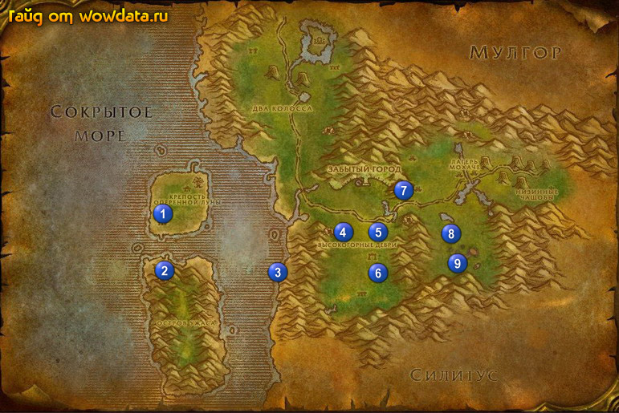

1) Справа от стоянки грифонов, в беседке у гостиницы начните <Знак качества>.
2) Сделайте Фералас вашим домом.
3) В длинном одноэтажном здании справа от гостиницы начните <Пропавший курьер> и <Руины Соларсаля>.
4) Немного восточнее в небольшом двухэтажном доме начните <В поисках знаний> и <Высокогорные дебри>.
5) Поднимитесь на 2 этаж и закончите <Пропавший курьер>, начните <Пропавший курьер>.
6) Идите в беседку 1 (26, 52) и закончите там <Руины Соларсаля>, начните <Возвращение в Крепость Оперенной Луны>.
7) Вернитесь обратно в Крепость оперенной Луны в длинное одноэтажное здание и закончите так <Возвращение в Крепость Оперенной Луны>, начните <Борьба с Гребнем Ненависти>, закончите квест у NPC рядом и начните <Борьба с Гребнем Ненависти>.
8) Бейте нага 1 (26, 54) для <Борьба с Гребнем Ненависти>.
9) Вернитесь обратно в Крепость оперенной Луны, в длинное одноэтажное здание, закончите <Борьба с Гребнем Ненависти>, затем начните <Борьба с лордом Шалзару>.
10) Идите вниз в пещеру 2 (26, 66) и убейте там Лорд Шалзару в конце пещеры для
<Борьба с лордом Шалзару>.
11) Вернитесь в Крепость оперенной Луны, если хотите побыстрее то умрите и реснитесь на кладбище.
12) Закончите <Борьба с лордом Шалзару> в длинном одноэтажном здании, начните <Доставка реликвии>, закончите его в правой части этого здания.
13) Сядте на корабль, который плывет на основной остров.
14) Идите на юг от доков и бейте Дух крикуна для <Духи крикунов>. Не забывайте вызывать у них души поговорить с ними.
15) Найдите лодку в воде у берега 3 (45, 65), использовав ее закончите <Пропавший курьер> и начните <Разбитая лодка>. Аккуратно, повсюду полно 49 элементарей.
16) По руне вернитесь в Крепость оперенной Луны.
17) Идите в небольшой двухэтажный домик и на 2 этаже закончите <Разбитая лодка>, начните <Тайна ножа>.
18) Идите на верх башни (дерево) и закончите там <Тайна ножа>, начните <Сверхзнание>.
19) Закончите <Сверхзнание> на 2 этаже маленького двухэтажного домика. Начните <Гноллы из стаи Древолапов>.
20) Сядьте на корабль плывущий на основной остров.
21) Идите бейте ети 4 (56, 56) для <Знак качества>.
22) Пройдите на восток и бейте мобов в точках 5 (60, 56) и 6 (59, 66) для <Высокогорные дебри>.
23) Идите наверх, начните <Свободу всем живым существам!> 7 (66, 46), NPC хорошо спрятаны, и проход к ним в точке между горой и деревом. Смысл квеста что нужно освободить 6 мобов из плена тауренов, эльфийка идет за вами и на весь квест 6 минут, как только 6 мобы спасутся квест будет выполнен. Советую сначала зачистить немного лагерь с тауренами, особенно пути отступления (не лутайте мобов, это задержит их респ).
24) Вернитесь назад и закончите этот квест 7 (66, 46), начните <Небольшое возмездие>. Мобы на этот квест находятся в тауренском лагере.
25) Вернитесь и закончите <Небольшое возмездие> 7 (66, 46), начните <Небольшое возмездие>.
26) Идите вниз 8 (73, 56), используйте Большие кожаные рюкзаки, висящие на большом дереве, где как раз расположилась маленькая стоянка гноллов. Закончите <Гноллы из стаи Древолапов> и начните <Гудящая Бездна>.
27) Откройте [Недоставленная посылка] в вашем инвентаре и начните <Посылка в Таланаар>.
28) Идите вниз 9 (73, 63), пройдите в южный туннель и поверните на право, вы увидите Кокон Цуккаша. Используйте его и закончите <Гудящая Бездна>, начните <Освобожденный из улья>. Послушайте эльфа.
29) Вернитесь по руне в Крепость оперенной Луны.
30) Справа от гостиницы в беседке закончите <Знак качества> и начните <Борьба за качество>.
31) Идите в небольшой двухэтажный домик и закончите там <Высокогорные дебри>, на втором этаже закончите <Освобожденный из улья>, начните <Благодарность за отвагу>.
32) Идите в длинное одноэтажное здание и закончите <Благодарность за отвагу>, затем начните <Возвышение силитидов>.
33) Летите в Таланаар и закончите там <Посылка в Таланаар>.
34) Летите в Деревня Рут'теран ( Дарнасс ).
35) Спуститесь к доку и войдите в дом, закончите <Не кантовать!>, начните <Любимцы Элуны?>.
36) Поднимитесь на 2 этаж и закончите <В поисках знаний>, в противоположной части комнаты у книжных шкафов, откройте зеленую книгу на полу и начните <"История Фераласа">, закончите его тут же у эльфийки и начните <В обмен на книгу>.
37) Бегите в город и выучите новые скиллы.
38) Идите в храм луны, на 2 этаже закончите <Возвышение силитидов> и
<Небольшое возмездие>.
39) Купите 2 [Эликсир Стойкости], для следующих частей этих квестов.
40) По руне вернитесь в Крепость оперенной Луны и летите в Прибамбасск, где закончите <В обмен на книгу> и начните <Супер-хвататель ФХ>.